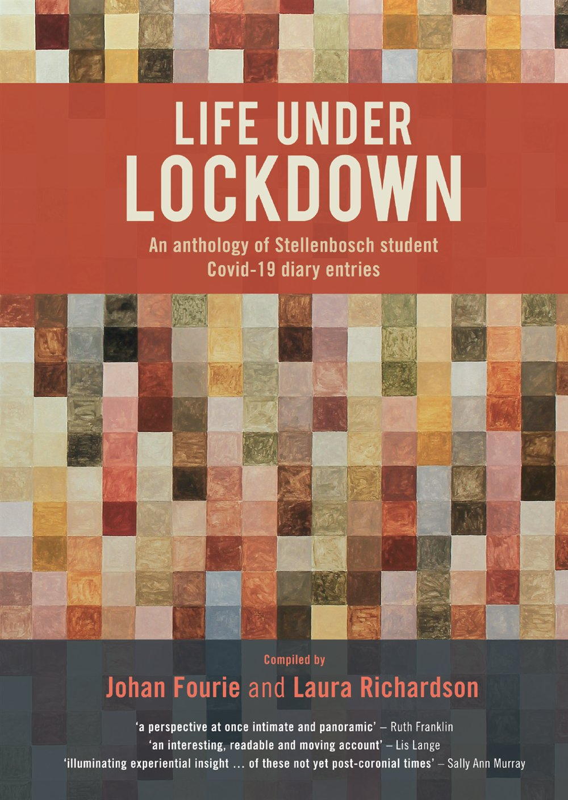

About this book
The editors
Johan Fourie is professor of economics at Stellenbosch University where he teaches graduate and undergraduate courses in economic history, including Economics 281, the class responsible for these diary entries. He joined the Economics department in 2006 and graduated with a PhD in Economic History from Utrecht University in 2012. He is a B1-rated National Research Foundation researcher, a founding member of the African Economic History Network, a former editor of Economic History of Developing Regions, former president of the Economic History Society of Southern Africa and currently heads up the Laboratory for the Economics of Africa’s Past (LEAP) at Stellenbosch University. His first book, Our Long Walk to Economic Freedom (Tafelberg), was published in 2021.
Laura Richardson is a South African postgraduate student interested in oral and written histories of emotion and everyday life. She completed her Master’s degree as part of the Biography of an Uncharted People Project at Stellenbosch University. She is now working towards a PhD at the University of Cambridge. Laura’s PhD investigates the everyday dynamics of sex education and reproductive decision-making in apartheid South Africa
Acknowledgements
A crisis often creates opportunities. When South Africa locked down in March 2020 to slow down the spread of a coronavirus, I asked my Economics 281 students to record their experiences for a few weeks. I could not have envisioned that that request would ultimately culminate in this publication. But after reading through their submissions a month or so later, it was immediately apparent that their thoughts, feelings and experiences had to be preserved for future generations.
Turning an essay submission into a published volume, though, is not an easy undertaking. Many helped along the way. I want to, first, thank Laura Richardson, my co-editor. In 2020, Laura was a Master’s student in the History department at Stellenbosch. (She subsequently graduated cum laude and is now a PhD student at the University of Cambridge.) Laura’s interest in microhistory complemented my more quantitative inclinations. Without her contribution in collating, selecting and editing the diary entries, and in co-authoring the introductory chapter, this book would never have seen the light.
Laura and I would also like to thank several other contributors. Jonathan Jayes, a former Master’s student in the Economics department at Stellenbosch and now a PhD student at Lund University, visualised the text analysis. Hanjo Odendaal, Amy Rommelspacher and Katherine Steinke also provided valuable research support. Kelsey Lemon, Jonathan Schoots and Kereeditse Tsokodibane gave helpful comments on an earlier version of this manuscript.
We want to thank two anonymous referees. Their comments improved the manuscript substantially. Sally Ann Murray, Lis Lange and Ruth Franklin provided generous recommendations. Nico Koopman kindly agreed to write a Foreward. Michelle Meyer and Anina Joubert at African Sun Media helped ensure that the final product was one to be proud of. The cover artwork, Atlas, was created by Klara-Marie den Heijer during South Africa’s second Covid-19 wave. More information about the artwork is provided on the next page. Find Klara-Marie’s work at www.klaramariedenheijer.com. Expert book cover designers Mike Cruywagen and Stefni Cruywagen at Nudge Studio did another fantastic job.
Publishing a book also requires financial support. The Laboratory for the Economics of Africa’s Past (LEAP) that Fourie coordinates at Stellenbosch University benefits from the largesse of several public and private donors. The Andrew W. Mellon Foundation, through their support of the Biography of an Uncharted People project, has allowed us to offer bursaries to students, invest in digitising and transcribing historical sources and undertake innovative projects, like this one. We are grateful for their and others’ continued support.
This project, ultimately, was made possible by the Economics 281 class of 2020. Their thoughts, feelings and experiences – and those of the many other students of their generation who had to encounter this bizarre moment in time – are what makes this a project worth pursuing. As the diary entries demonstrate, many faced uncertainty and upheaval. For some, the consequences of the Covid-19 pandemic were dire; we know of several students in that cohort that, for various reasons, could not complete their studies. They have been brave in the face of a coronavirus calamity. We dedicate this book to the generation of students who have had to endure the lamentable effects of life under lockdown.
Johan Fourie and Laura Richardson
Cover art

Atlas (handmade pigment and oil on canvas, 130 cm x 120 cm) is an oil painter’s psycho-geological colour study; the grid composed of 624 coloured squares are painted with a collection of handmade pigments sourced from various sites in South Africa and around the world [i.e. Coetzenburg, Jonkershoek, Sossyskloof, Rustenberg Farm (Ida’s Valley), Helderberg, Theewaterskloof, Bergrivierdam, Bredasdorp, Nature’s Valley, Strandfontein (West Coast), Spektakelpas (Springbok), Hluhluwe, Kalahari, Moreletakloof (Pretoria), Jonkershoek, Namibia, Leuven (Belgium), Ganterschwil (Switzerland) and Pisa (Italy).] The pigments were extracted from substances such as clay, earth, ochre, sand, bricks and ash. Some were gathered by the artist herself from the places she has travelled to. Others were gifts from family, friends and acquaintances.
Atlas was painted during South Africa’s second wave of the Covid-19 pandemic in January 2021. With the restrictions on movement, lockdown made for uninterrupted painting time. Both the painting Atlas and the anthology Life under Lockdown relates to themes like the local versus the global, separated versus gathered, isolated versus together, the individual versus the whole/group, and the analytical versus the relational.
Klara-Marie den Heijer